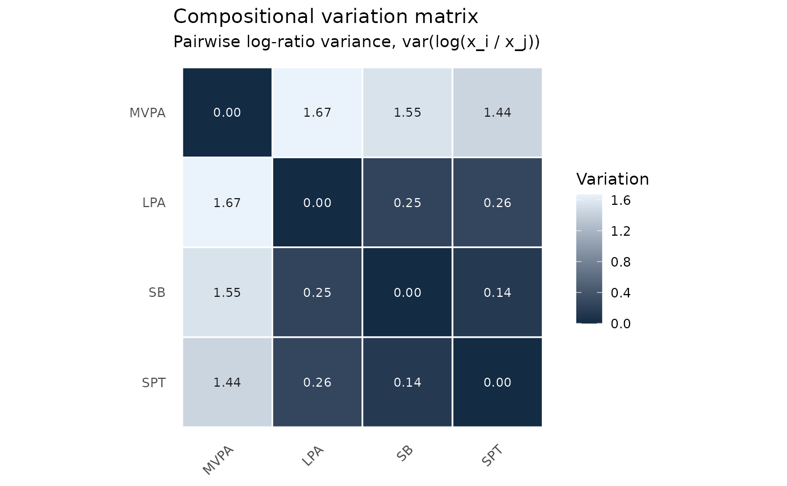
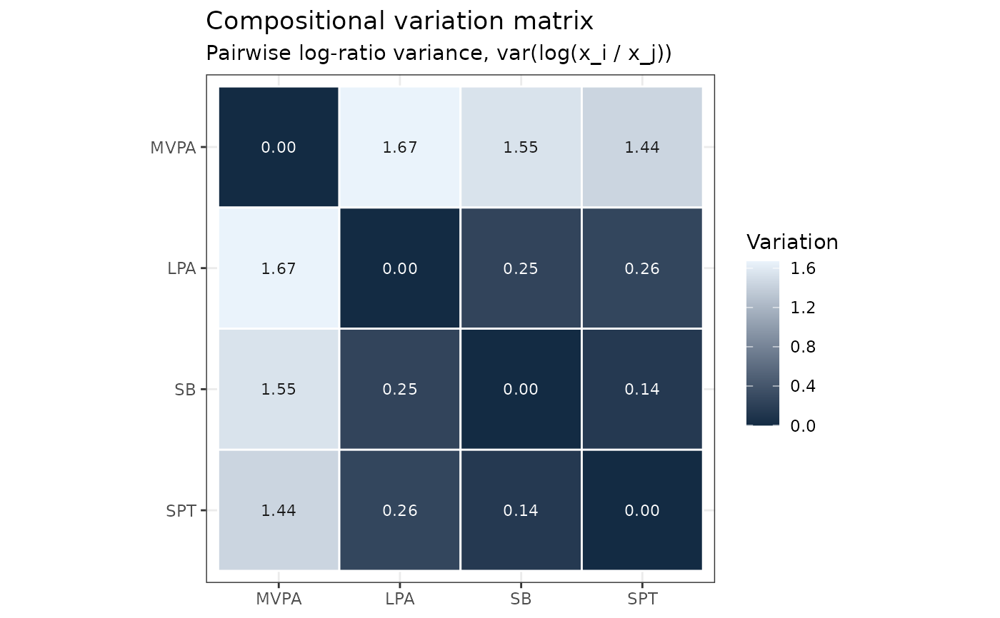

Draws the compositional variation matrix as a tile heatmap, shading each
cell by the pairwise log-ratio variance var(log(x_i / x_j)), zero by
construction on the diagonal. Small values mark highly proportional parts
(parts that move together); with the default colours they are drawn darker
and large values lighter. The axes carry the part labels of the
declare_composition() object.
Usage
plot_variation(
x,
digits = 2,
show_values = TRUE,
low = "#132B43",
high = "#EAF3FB",
theme = NULL
)Arguments
- x
A
compDobject fromdeclare_composition().- digits
Decimal places for the value labels drawn in each cell. Default
2.- show_values
Logical; print the rounded variance in each cell. Default
TRUE.- low, high
Colours for the low (dark, highly proportional) and high (light) ends of the gradient. Defaults give a dark-to-light blue scale.
- theme
Optional
ggplot2theme added over the default heatmap theme (e.g.,ggplot2::theme_bw()orggplot2::theme(legend.position = "bottom")). DefaultNULLadds none. Complete themes are listed in theggplot2reference under "Themes" (?ggplot2::theme_bw).plot_ternary()takes a separateggterntheme.
See also
summary.compD() for the variation matrix as a table.
Other visualization:
plot_ternary()
Examples
cd <- declare_composition(timeuse, c("MVPA", "LPA", "SB", "SPT"),
closure = 1440)
plot_variation(cd)

plot_variation(cd, theme = ggplot2::theme_bw())
